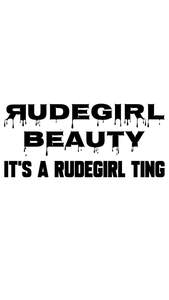

Trade Mark Journal No.2025/014 4 April 2025
UK00004174261 15 March 2025 (3,25)

- Class 3
- Beauty serums; Beauty creams; Beauty lotions; Beauty care cosmetics; Beauty masks; Masks (Beauty -); Beauty soap; Beauty milk; Beauty gels; Beauty milks; Beauty creams for body care; Facial beauty masks; Beauty balm creams; Beauty preparations for the hair; Beauty care preparations; Distilled oils for beauty care; Beauty tonics for application to the face; Beauty masks for hands; Beauty tonics for application to the body; Beauty serums with anti-ageing properties; Natural cosmetics; Body cleaning and beauty care preparations; Non-medicated beauty preparations; Natural makeup; Skincare cosmetics; Natural perfumery; Body care cosmetics; Body and facial creams [cosmetics]; Hair cosmetics; Cosmetics; Skin care cosmetics; Colour cosmetics; Facial creams [cosmetics]; Colour cosmetics for the skin; Hair care creams [for cosmetic use]; Anti-aging moisturizers used as cosmetics; Colour cosmetics for the eyes; Cosmetic products in the form of aerosols for skincare; Body creams [cosmetics]; Cosmetics for eye-lashes; Natural oils for cosmetic purposes; Hair care lotions [for cosmetic use]; Facial makeup; Organic cosmetics; Cosmetics for suntanning; Cosmetic products in the form of aerosols for skin care; Eye cosmetics; Sun care lotions [for cosmetic use]; Skin masks [cosmetics].
- Class 25
- Clothes; Clothing; Swaddling clothes; Baby clothes; Beach clothes; Nappy pants [clothing]; Denims [clothing]; Jackets [clothing]; Work clothes; Shorts [clothing]; Aprons [clothing]; Drawers [clothing]; Drawers as clothing; Clothes for sports; Jackets (Stuff -) [clothing]; Stuff jackets [clothing]; Clothes for sport; Linen clothing; Headbands [clothing]; Headbands for clothing; Kerchiefs [clothing]; Gloves [clothing]; Gloves as clothing; Bottoms [clothing]; Furs [clothing]; Capes (clothing); Trunks being clothing; Maternity clothing; Babies' pants [clothing]; Clothing layettes; Jerseys [clothing]; Layettes [clothing]; Clothing for leisure wear; Gabardines [clothing]; Hoods [clothing]; Oilskins [clothing]; Clothing for babies; Woolen clothing; Ready-to-wear clothing; Garments for protecting clothing; Bodies [clothing]; Tops [clothing]; Belts [clothing]; Gussets for underwear [parts of clothing]; Belts for clothing; Playsuits [clothing]; Collars [clothing]; Veils [clothing]; Pockets for clothing; Knitwear [clothing]; Corsets [clothing, foundation garments]; Paper hats for use as clothing items; Silk clothing; Mitts [clothing]; Fabric belts [clothing]; Hats (Paper -) [clothing]; Paper hats [clothing]; Beach clothing; Belts (Money -) [clothing]; Money belts [clothing]; Braces for clothing; Chaps (clothing); Embroidered clothing; Ready-made clothing; Gussets for bathing suits [parts of clothing]; Visors [clothing]; Casual clothing; Knitted clothing.
Lord Shavohn Stewart